Pas besoin d'installer votre périphérique d'impression !
Avec Watchdoc Print Client (WPC) for Windows, vous pouvez imprimer où et quand vous voulez, sans vous soucier de l'installation des imprimantes.
Le Print Client est installé sur votre poste utilisateur. Il détecte automatiquement votre localisation et dirige vos documents vers l'imprimante la plus proche. Si celle-ci n'est pas disponible, vous serez redirigé vers un autre périphérique situé dans le même périmètre.
Grâce à Watchdoc Print Client, vous pouvez également vérifier vos informations, retrouver vos codes d'impression (PUK, PIN) et visualiser votre impact environnemental.
Initialiser WPC for Windows sur votre poste
Une fois Watchdoc Print Client for Windows installé (manuellement ou par déploiement de masse par l'administrateur) sur votre poste utilisateur, vous devez l'initialiser :
-
ciquez sur l'icône Watchdoc Print Client en bas à droite, dans la zone de notification Windows ;
-
si l'icône n'apparaît pas, cliquez sur la flèche pour afficher les icônes cachées, puis cliquez sur l'îcône WPC :
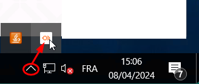
-
Authentifiez-vous dans l'interface affichée à l'aide des éléments d'authentification indiqués par votre administrateur (login/mot de passe Windows, compte EntraID ou autre, spécifique à votre organisation) :
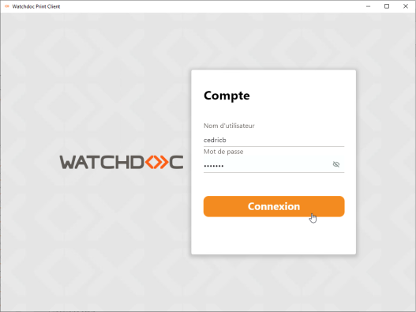
-
Après avoir pris connaissance des informations délivrées dans les écrans de bienvenue, cliquez sur le bouton pour lancer l'installation des imprimantes de proximité sur votre poste de travail :
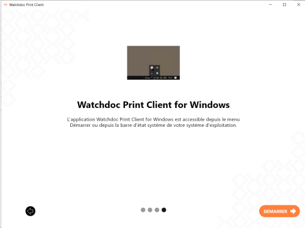
-
WPC vous invite à sélectionner l'emplacement à partir duquel vous lancez habituellement vos impressions. Ainsi, WPC for Windows localise physiquement votre poste et vous propose un périphérique d'impression proche de l'endroit où vous travaillez.
Par la suite, vous ne serez plus obligé de préciser cet emplacement (sauf en cas de déplacement dans un autre lieu de travail).
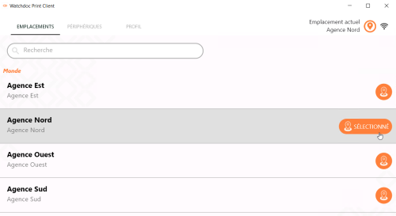
-
Une fois l'emplacement sélectionné, WPC installe l'imprimante (ou les imprimantes) de proximité associée(s) à cet emplacement :
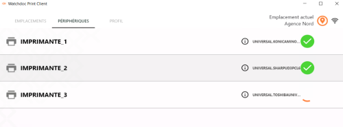
-
Lorsqu'au moins une icône s'affiche, l'installation initiale est terminée. Vous disposez au moins d'un périphérique d'impression proche de vous. Vous pouvez alors quitter WPC for Windows et lancer vos impressions depuis vos applications habituelles.
Installer manuellement un périphérique d'impression
Si vous souhaitez utiliser une imprimante qui n'apparaît pas dans la liste des imprimantes installées par WPC, vous pouvez l'ajouter manuellement :
-
cliquez sur l'icone pour lancer WPC for Windows :
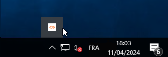
-
sous l'onglet Périphériques, cliquez sur le bouton Installer :
-
dans la liste, sélectionnez l'imprimante que vous souhaitez installer :
-
cliquez ensuite sur le bouton :
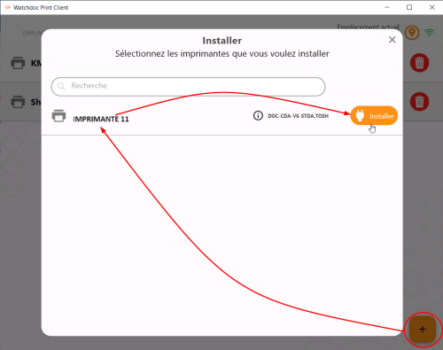
-
Un curseur indique la progression de l'installation.
Au terme de l'opération, l'icône ainsi qu'une notification informent que l'imprimante a bien été installée :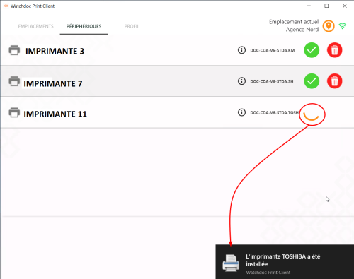
-
Le bouton vous permet de désinstaller une file installée manuellement.
En revanche, vous ne pouvez pas supprimer les imprimantes installées par WPC.
Modifier l'emplacement
Lors de son installation sur votre poste, vous avez précisé l'emplacement, c'est-à-dire le lieu d'où vous lancez habituellement vos impressions.
Si vous changez d'emplacement, WPC détecte ce changement et vous propose alors de préciser l'emplacement que vous souhaitez utiliser :
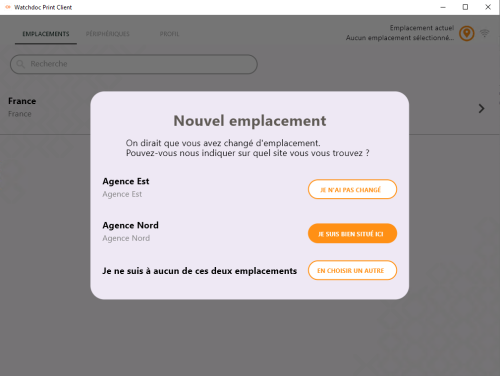
Vous pouvez aussi modifier l'emplacement en sélectionnant le lieu souhaité sous l'onglet Emplacement.
Haute-disponibilité : utiliser l'impression directe en cas de panne
A droite de l'emplacement, une pastille de couleur précise l'état de connectivité entre l'application et le(s) serveur(s) d'impression :
-
grise : WPC est en cours d'installation, la connexion n'a jamais été initiée.
-
noire : WPC ne trouve aucun serveur configuré pour cet emplacement. Il peut s'agir d'un problème de choix d'emplacement (utilisateur) ou de configuration (administrateur).
-
rouge : tous les serveurs configurés sont hors-service.
-
orange : au moins 1 des serveurs configurés est hors-service.
-
vert : tous les serveurs configurés sont opérationnels.
Dans le cas où le serveur d'impression est défaillant, WPC propose deux solutions : attendre ou imprimer en direct.
Après avoir lancé le travail d'impression depuis votre poste de travail, une notification Windows® indique une indisponibilité de la file universelle en raison d'une panne du serveur.
-
cliquez sur la notification Windows® qui s'affiche en bas, à droite de l'écran de votre poste de travail :
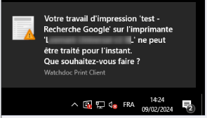
-
choisissez ensuite :
-
soit d'attendre que le serveur soit de nouveau disponible pour imprimer :
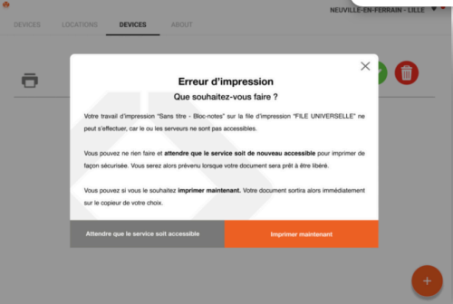
-
soit d'imprimer en direct sur l'un des périphériques disponibles (à choisir dans une liste de périphériques sur lesquels vous vous êtes déjà authentifiés).
N.B. : dans ce cas, le travail demandé est imprimé sans authentification ni validation.
Il est donc préférable de se trouver à proximité du périphérique d'impression, notamment si le document est confidentiel.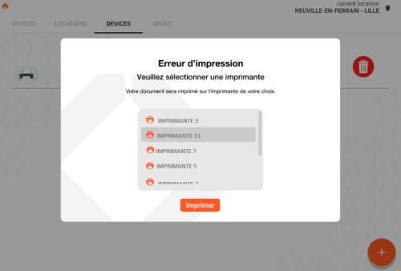
-
-
Rendez-vous sur l'imprimante sélectionnée pour récupérer votre impression.